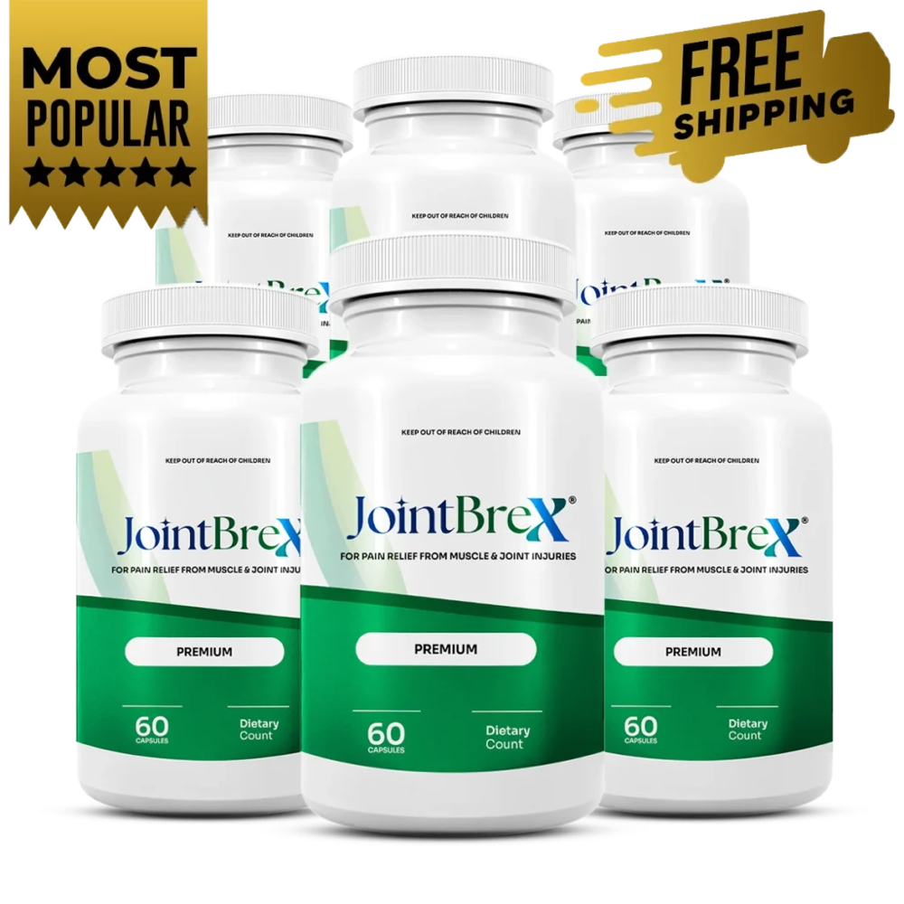

What Is JointBrex And How Does It Work?
Ask most people why their knees ache and they'll point to their age. The more useful answer is smaller and more specific than that — it's about a cushion that's gotten thin.
Here's the idea. Picture the ends of two bones meeting at a joint like the hinge of a door that's been opened and closed for decades, with a slick, rubbery pad wedged in between so metal never has to grind against metal. That pad is cartilage — call it the joint cushion — and it thins out gradually the longer the years and the stairs and the miles pile up. Once it gets thin enough, every bend of the joint means the bone edges sit a little closer together than they used to. That's the moment the stiffness shows up, especially first thing in the morning before anything has had the chance to loosen.
JointBrex is a daily capsule formula built to work that problem from two directions at once. One side feeds the joint cushion the structural material it needs to stay padded, anchored by Glucosamine Sulfate and Chondroitin Sulfate — the two ingredients most associated with cartilage maintenance. The other side calms the inflammation that builds up around a hinge that's been working overtime, using a blend led by Boswellia, Turmeric, and Bromelain.
It comes in vegetable capsules, sixty to a bottle, taken two at a time with a full glass of water — no powders to mix, no liquid to measure out. It's built for adults dealing with the ordinary wear of age-related joint discomfort, morning stiffness, and mobility that isn't what it used to be, not as a treatment for a diagnosed autoimmune joint condition or as post-surgical rehab.
Cartilage doesn't rebuild itself over a long weekend, and JointBrex was never built to pretend otherwise. Feeding the joint cushion is a habit that compounds month over month, which is exactly why the whole routine comes down to two capsules a day instead of a schedule complicated enough to abandon by week two.
JointBrex Ingredients
Every ingredient in JointBrex earns its spot on one of two fronts: rebuilding the joint cushion itself, or calming the inflammation crowding in around it.
- Glucosamine Sulfate (1,000 mg): The largest dose in the formula by far, and the ingredient most closely tied to cartilage maintenance — the raw material the joint cushion is built from.
- Chondroitin Sulfate (100 mg): Works alongside glucosamine as part of the same structural support system, helping the cartilage hold its cushioning properties.
- Boswellia Extract (133.3 mg): A botanical resin extract included specifically for its role in calming the inflammation that builds up around an overworked joint.
- Turmeric (100 mg): Brings both anti-inflammatory and antioxidant support to the blend, working alongside Boswellia on the calming side of the formula.
- Bromelain (16.7 mg): An enzyme included for its own anti-inflammatory contribution, rounding out the calming half of the blend.
- Quercetin (16.7 mg): An antioxidant that supports the broader inflammatory response alongside the rest of the formula.
- MSM (16.7 mg): A sulfur compound long associated with joint support, added as part of the structural side of the blend.
- Methionine (16.7 mg): An amino acid included to support the connective tissue surrounding the joint.
Eight ingredients, each with a specific job, none of them there just to pad out a label. Glucosamine carries the largest share of the formula by weight because it's doing the heaviest structural lifting; the rest of the blend works around it, feeding the joint cushion on one side and quieting the swelling on the other.
JointBrex Side Effects
The short version: this is a formula built to fit into a morning routine, not one that asks you to brace for anything.
JointBrex is made for adults who want daily joint support without a complicated regimen — the entire serving is two vegetable capsules, swallowed with water, no injections, no prescriptions, no new habit to build from scratch. Glucosamine, Chondroitin, and the botanical blend around them are nutrients and plant extracts the body already knows how to process, used here as a daily supplement rather than a pharmaceutical-strength compound.
Reports of adverse reactions tied to normal, as-directed use simply aren't out there in any meaningful number. JointBrex is manufactured in the United States in an FDA-registered facility, with the brand pointing to small-batch production as part of how it controls quality.
Worth flagging before you start: the glucosamine in this formula comes from a shellfish source, so anyone with a shellfish sensitivity should loop in a doctor before adding JointBrex to their day. As with any dietary supplement, anyone with an existing medical condition or currently taking a prescription medication should also consult a healthcare professional first.
JointBrex Dosage
Two capsules. Once a day, with a full glass of water, preferably before a meal. That's the entire routine.
Each bottle of JointBrex holds sixty capsules — a full thirty-day supply at the two-capsule daily serving. One schedule, taken the same way every day, with nothing to divide up or time around meals beyond "before you eat."
Structural ingredients like Glucosamine and Chondroitin do their work in layers, a little more cushion laid down each week rather than a single dramatic shift. That's the whole reason the label doesn't ask for more than two capsules — and it's also why anyone serious about giving the joint cushion approach a fair test tends to skip past the single bottle and go straight for one of JointBrex's larger multi-bottle options, since thirty days barely covers the warm-up.
JointBrex – Refund Policy
Two months. That's how long JointBrex asks you to trust the process before it asks anything of you in return.
A 60-day money-back guarantee backs every order, and the length of that window says something on its own: cartilage support isn't a formula that shows its hand in a week, so a company confident enough to stand behind sixty days of use is putting real skin in the game, not just collecting a sale and hoping you forget to check back in.
The full terms and the current steps for requesting a refund live on the official JointBrex website — that's the source to check before you order, since policy details are the kind of thing that can shift.
JointBrex Customer Reviews
 Patricia Doyle
Spokane, WA
Verified Purchase – 6 Bottles
Patricia Doyle
Spokane, WA
Verified Purchase – 6 Bottles
"I used to take the stairs one at a time, both hands on the railing, like I was forty years older than I actually am. My daughter noticed before I said anything about it — she started walking behind me on the stairs at Christmas without making a thing of it. About two months into JointBrex, I caught myself going down a full flight without thinking about my knees at all, and that's when it actually hit me how much had changed. I'm already reordering, and this time I went straight for six bottles."
 Walter Higgins
Peoria, IL
Verified Purchase – 3 Bottles
Walter Higgins
Peoria, IL
Verified Purchase – 3 Bottles
"Getting out of the car after anything longer than twenty minutes used to mean sitting there a second, bracing myself before I stood up. My grandson asked me once why I always 'did the pause' before I got out, and I didn't have a good answer for him. A few months on JointBrex and that pause mostly isn't there anymore — I just get out and go. He hasn't asked about it again, which honestly might be the best compliment I've gotten out of this whole thing."
 Nora Bishop
Asheville, NC
Verified Purchase – 3 Bottles
Nora Bishop
Asheville, NC
Verified Purchase – 3 Bottles
"I stopped kneeling down in my own garden two summers ago because getting back up wasn't worth what it cost me the rest of the day. That's a strange thing to grieve, but I did. Almost three months into JointBrex, I was down on the ground pulling weeds before I even registered what I was doing — I'd just done it, the way I used to. I called my sister that same afternoon just to tell her. Already ordered my next round."
JointBrex – Where To Buy
Plenty of people go looking for JointBrex the same place they buy everything else — a marketplace search bar. That's the one shortcut worth skipping.
JointBrex isn't listed on Amazon, eBay, Walmart, or any other third-party marketplace, and the manufacturer hasn't authorized anyone to sell it there. A capsule formula lives or dies on what's actually measured out inside it, and a listing outside the official channel is a listing nobody can verify — there's simply no way to know the dosing matches what's on the real label. Buy through one of those unofficial routes and the 60-day guarantee doesn't travel with it either, which means a bad batch or a bad fit leaves you with nothing to fall back on.
None of that risk exists on the official JointBrex website. It's the only place where the price you pay comes bundled with the guarantee, the real formula, and an actual line to customer support if something needs sorting out.
To ensure you're getting the authentic product, most users choose to visit the official website directly.
Is JointBrex A Scam?
Strip away the marketing language and ask what's actually on the table: a labeled Supplement Facts panel with real numbers, a real price, a written 60-day guarantee, and a manufacturer you can actually reach. That's not the shape of a scam — it's the shape of an ordinary supplement business standing behind what it sells.
Worth being straight about: JointBrex doesn't max out every ingredient at research-grade strength. Glucosamine carries the bulk of the formula by weight, and the supporting cast around it — Boswellia, Turmeric, Bromelain, and the rest — is dosed as a blend rather than headline amounts each. Go in knowing that. What it doesn't mean is that the formula is hollow: naming eight ingredients with real, disclosed numbers on the label is still a more specific case than the vague "proprietary joint blend" plenty of competitors hide behind, and the reasoning behind it — rebuild the joint cushion instead of numbing the ache and calling it solved — holds up on its own logic. Add a U.S. facility under FDA registration and a 60-day window to actually judge results, and there's more here to stand on than not.
That said, this isn't for everyone, and it was never going to be. Anyone chasing same-day pain relief, or unwilling to stick with something for a couple of months before deciding, should probably look elsewhere — no hard feelings, plenty of people handle joint discomfort a different way entirely.
For the rest: give it the two months the guarantee already paid for. Worst case, you send it back and you're only out the time it took to test it. Anyone with an existing medical condition, a prescription to manage, or a shellfish allergy should run it by a doctor before starting, same as with any supplement.
For those who want to verify product details or check current availability, the official JointBrex website remains the safest and most reliable option.
